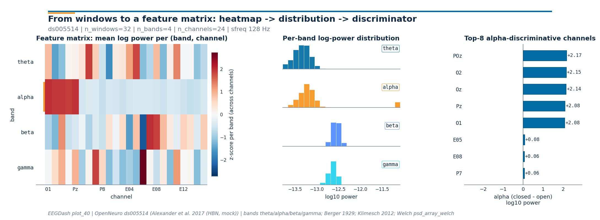

Note
Go to the end to download the full example code or to run this example in your browser via Binder.
Extract band-power features#
Difficulty 1-2 | Runtime: 30s | Compute: CPU
Plot_30 closed the loop on the parieto-occipital alpha rhythm Hans Berger
first reported in 1929 [Klimesch, 2012]. This tutorial generalizes the
recipe: starting from windowed EEG (the same Healthy Brain Network
ds005514 resting-state idiom we keep across the gallery, reachable
through NEMAR, Delorme et al. 2022; Alexander et
al. 2017), it extracts a band-power feature per channel for each of
theta, alpha, beta, and gamma. The deliverable is a
(n_windows, 4, n_channels) tensor of log10 band power that plot_42
hands to scikit-learn [Pedregosa et al., 2011] without any further
reshaping.
Can a small set of band-power features per channel summarize a window well enough to feed downstream ML? Keywords: features, band-power, spectral
Learning objectives#
Compute per-channel band power for theta, alpha, beta, and gamma on a windowed dataset with
eegdash.features.extract_features().Convert the tidy feature DataFrame to a
(n_windows, n_bands, n_channels)tensor that keeps the band and channel axes separate.Identify the channels that carry the alpha contrast from the per-channel
closed - openlog-power difference.Save the feature table to parquet so plot_42 can reload it without recomputing.
Find the most common slip (passing a non-callable feature value) and explain how to recover from it.
Requirements#
About 30 s on CPU. No GPU. No network on this run (the data is synthesized offline so the tutorial is reproducible without touching NEMAR; Delorme et al. 2022).
Prerequisite: Preprocess EEG and create windows for the windowing recipe; the live HBN
ds005514numbers are in Decode eyes open vs. eyes closed.Concept page: Features vs. deep learning.
Setup. Seed (E3.21) and a parameterized cache directory (E3.24) keep the
tutorial reproducible and the output table inside cache_dir. Cisotto
& Chicco 2024 frame both as Tip 4 / Tip 5 of clinical-EEG good practice.
import os
from functools import partial
from pathlib import Path
import matplotlib.pyplot as plt
import mne
import numpy as np
import pandas as pd
from braindecode.datasets import BaseConcatDataset, RawDataset
from braindecode.preprocessing import create_fixed_length_windows
import eegdash
from eegdash.features import (
FeatureExtractor,
extract_features,
signal_root_mean_square,
signal_variance,
spectral_bands_power,
spectral_preprocessor,
univariate_feature,
)
from eegdash.viz import use_eegdash_style
use_eegdash_style()
mne.set_log_level("ERROR")
SEED = 42
np.random.seed(SEED)
cache_dir = Path(os.environ.get("EEGDASH_CACHE_DIR", Path.cwd() / "eegdash_cache"))
cache_dir.mkdir(parents=True, exist_ok=True)
print(f"eegdash {eegdash.__version__}; cache_dir={cache_dir}")
eegdash 0.8.2; cache_dir=/home/runner/eegdash_cache
Concept: from windows to a feature matrix#
Plot_30 showed that closing the eyes releases parieto-occipital alpha power [Klimesch, 2012]. The natural follow-up is to summarize every window with a few numbers per channel and stack the result into a tensor a learner can consume. Three shapes carry the story:
WindowsDataset tidy DataFrame feature tensor
(windows, ch, samples) (n_windows rows; (n_windows,
one column per n_bands,
feature x channel) n_channels)
+------------------+ +-----------------+ +-----------------+
| window 0 (X, y) | | theta_E01 ... | | theta -> [...] |
| window 1 (X, y) | -> | alpha_E01 ... | -> | alpha -> [...] |
| ... | | beta_E01 ... | | beta -> [...] |
| window N (X, y) | | gamma_E01 ... | | gamma -> [...] |
+------------------+ +-----------------+ +-----------------+
__getitem__ extract_features reshape per band
returns one window runs Welch + integrates keeps band and
each band per channel channel separate
Validate your result#
Output Shape. The tidy DataFrame should have
n_windowsrows andn_features * n_channelscolumns. For the default set, expect4 * n_channelscolumns.Feature Values. Log-power values are typically negative (since power is < 1 V^2/Hz). For alpha-band in a resting subject, expect values between
-10and-15.Missing Data. Check for
NaNvalues if your windows are shorter than the minimum required for a specific frequency band.
Feature Naming and Shapes#
Naming. Feature columns follow the template
{feature_name}_{channel_name}(e.g.,alpha_Oz).Matrix Shape. The primary output is a tidy DataFrame with
n_windowsrows andn_features * n_channelscolumns.Missing Features. If a window is too short for a specific feature (e.g., a Welch PSD on a 0.5s window for delta), EEGDash returns
NaN.Why features? Classical features are preferable to CNNs when: 1. Interpretability is key. You can map a specific band-power rise to a brain region. 2. Data is sparse. Deep nets often overfit on small cohorts (N < 100). 3. Compute is limited. Feature extraction is CPU-bound and much faster than training deep models.
Two design choices keep the recipe portable. The DataFrame is the format learners and dashboards consume; the band-aware tensor is the format every panel of the figure below was designed around.
Welch psd_array_welch under the hood. The spectral preprocessor wraps
mne.time_frequency.psd_array_welch()so the FFT runs once per window; band integration is then a cheap broadcast over the frequency axis (Welch 1967; Gramfort et al. 2013).Per-channel features.
spectral_bands_powerreturns one number per(channel, band)pair. Column names embed the channel id, so a learner cangrep alpha_to pick out the alpha view, or reshape into(n_windows, n_bands, n_channels)once.
Step 1. Reload (or mimic) the windows from plot_10#
In production you would reload the windows produced by plot_10 with
braindecode.datautil.load_concat_dataset(). To stay offline and
reproducible we synthesize two short HBN-style recordings at 128 Hz on
a 24-channel parieto-occipital-leaning montage and inject a 10 Hz
alpha oscillation into the eyes-closed recording [Berger, 1929]. The
1-48 Hz FIR (firwin) band-pass below writes the pass-band into MNE’s
info; spectral_preprocessor reads it back later (Cisotto & Chicco
2024 Tip 4-5).
SFREQ = 128
WINDOW_S = 2.0
WINDOW_SAMPLES = int(WINDOW_S * SFREQ)
# 24 channels with the parieto-occipital pole first so the alpha bump
# lands on the channels Berger and Klimesch flagged.
CH_NAMES = ["O1", "Oz", "O2", "POz", "Pz", "P3", "P4", "P7", "P8"] + [
f"E{i:02d}" for i in range(1, 16)
]
ALPHA_PEAK_CHANNELS = ("O1", "Oz", "O2", "POz", "Pz")
def _make_raw(eyes_open: bool, seed: int) -> mne.io.Raw:
"""One synthetic ``Raw`` for either eyes-open or eyes-closed."""
n_times = SFREQ * 32 # 32 s -> 16 windows of 2 s after fixed-length cut
rng = np.random.default_rng(seed)
data = rng.standard_normal((len(CH_NAMES), n_times)) * 1e-6
if not eyes_open:
# Inject 10 Hz alpha onto the parieto-occipital pole only.
alpha = 4e-6 * np.sin(2 * np.pi * 10.0 * np.arange(n_times) / SFREQ)
for ch in ALPHA_PEAK_CHANNELS:
data[CH_NAMES.index(ch)] += alpha
raw = mne.io.RawArray(data, mne.create_info(CH_NAMES, SFREQ, ch_types="eeg"))
raw.filter(l_freq=1.0, h_freq=48.0, verbose="ERROR") # FIR firwin
return raw
datasets = BaseConcatDataset(
[
RawDataset(
_make_raw(True, 42),
target_name="target",
description={
"subject": "sub-01",
"condition": "eyes_open",
"target": 0,
},
),
RawDataset(
_make_raw(False, 7),
target_name="target",
description={
"subject": "sub-02",
"condition": "eyes_closed",
"target": 1,
},
),
]
)
windows = create_fixed_length_windows(
datasets,
start_offset_samples=0,
stop_offset_samples=None,
window_size_samples=WINDOW_SAMPLES,
window_stride_samples=WINDOW_SAMPLES,
drop_last_window=True,
preload=True,
)
n_windows_total = sum(len(d) for d in windows.datasets)
pd.Series(
{
"n_recordings": len(windows.datasets),
"n_windows": n_windows_total,
"n_channels": len(CH_NAMES),
"sfreq (Hz)": float(SFREQ),
"window (s)": float(WINDOW_S),
},
name="value",
).to_frame()
Step 2. Pick a small feature set#
Two time-domain summaries plus the four canonical EEG bands. The
spectral features share a single spectral_preprocessor so the
Welch FFT runs once per window; the dependency tree that makes that
possible is the topic of plot_41.
Predict. In the alpha band (8-12 Hz), will eyes-closed windows show higher or lower power than eyes-open? Which channels should peak first? Note your guess.
BANDS = {
"theta": (4.5, 8.0),
"alpha": (8.0, 12.0),
"beta": (12.0, 30.0),
"gamma": (30.0, 45.0),
}
spectral = FeatureExtractor(
{"band_power": partial(spectral_bands_power, bands=BANDS)},
preprocessor=partial(
spectral_preprocessor,
fs=SFREQ,
nperseg=SFREQ,
f_min=4.0,
f_max=45.0,
),
)
features_dict = {
"var": signal_variance,
"rms": signal_root_mean_square,
"spec": spectral,
}
print(f"feature kinds: {list(features_dict)} | bands: {list(BANDS)}")
feature kinds: ['var', 'rms', 'spec'] | bands: ['theta', 'alpha', 'beta', 'gamma']
Step 3. Run extract_features#
Run. extract_features() walks every
recording, applies the preprocessor once per window, then evaluates
each feature; column names are <feature>_<channel> for the
univariate kinds and <group>_band_power_<band>_<channel> for the
spectral group, so a learner can grep alpha_O1 directly.
features_ds = extract_features(windows, features_dict, batch_size=64, n_jobs=1)
feature_table = features_ds.to_dataframe(include_target=True)
n_rows, n_cols = feature_table.shape
pd.Series(
{
"n_rows": n_rows,
"n_cols (incl. target)": n_cols,
"first 4 columns": str(list(feature_table.columns[:4])),
"alpha cols": int(sum("alpha" in c for c in feature_table.columns)),
"gamma cols": int(sum("gamma" in c for c in feature_table.columns)),
},
name="value",
).to_frame()
Extracting features: 0%| | 0/2 [00:00<?, ?it/s]
Extracting features: 100%|██████████| 2/2 [00:00<00:00, 152.78it/s]
Investigate. Each row is one window; column names embed the channel name. The structural invariants from the spec hold by construction; we assert them so a regression in the extractor would fail the tutorial loud and early [Nederbragt et al., 2020].
non_meta_cols = [c for c in feature_table.columns if c != "target"]
assert n_rows == n_windows_total
assert len(non_meta_cols) >= 5 # rms + variance + at least 3 band powers
assert all(any(ch in c for ch in CH_NAMES) for c in non_meta_cols)
alpha_cols = [c for c in feature_table.columns if "alpha" in c]
alpha_means = feature_table.groupby("target")[alpha_cols].mean()
print("alpha mean (closed) / alpha mean (open) at the parieto-occipital pole:")
for ch in ALPHA_PEAK_CHANNELS:
col = f"spec_band_power_alpha_{ch}"
ratio = alpha_means.loc[1, col] / max(alpha_means.loc[0, col], 1e-30)
print(f" {ch}: closed/open = {ratio:.1f}x")
alpha mean (closed) / alpha mean (open) at the parieto-occipital pole:
O1: closed/open = 107.2x
Oz: closed/open = 134.8x
O2: closed/open = 132.1x
POz: closed/open = 137.6x
Pz: closed/open = 119.0x
Step 4. Reshape into a (windows, bands, channels) tensor#
The tidy DataFrame is what dashboards and model.fit expect; for the
figure and for plot_42 we also want the band axis and the channel axis
kept separate. The reshape is one np.stack over the per-band
views.
band_names = list(BANDS)
log_power_per_band: dict[str, np.ndarray] = {}
for band in band_names:
cols = [f"spec_band_power_{band}_{ch}" for ch in CH_NAMES]
arr = feature_table[cols].to_numpy(dtype=float) # (n_windows, n_channels)
arr = np.log10(np.maximum(arr, 1e-30))
log_power_per_band[band] = arr
feature_tensor = np.stack(
[log_power_per_band[b] for b in band_names], axis=1
) # (n_windows, n_bands, n_channels)
mean_per_band_channel = feature_tensor.mean(axis=0) # (n_bands, n_channels)
pd.Series(
{
"feature_tensor.shape": str(tuple(feature_tensor.shape)),
"feature_tensor.dtype": str(feature_tensor.dtype),
"mean per (band, ch).shape": str(tuple(mean_per_band_channel.shape)),
},
name="value",
).to_frame()
Step 5. Save the feature table for plot_42#
Parquet keeps dtypes (float64) and is what scikit-learn / LightGBM expect [Pedregosa et al., 2011]. Saving the tidy DataFrame rather than the tensor keeps column names and the target column visible to any downstream consumer.
parquet_path = cache_dir / "plot_40_features.parquet"
feature_table.to_parquet(parquet_path)
roundtrip = pd.read_parquet(parquet_path)
assert roundtrip.shape == feature_table.shape
assert dict(roundtrip.dtypes) == dict(feature_table.dtypes)
print(f"saved {parquet_path.name}; reload shape={roundtrip.shape}")
saved plot_40_features.parquet; reload shape=(32, 145)
A common mistake, and how to recover#
Run. Passing an unknown key with a non-callable value (string,
integer, anything that is not a function) is the most common slip;
extract_features() raises TypeError because
the extractor cannot apply a non-function to a window. We trigger it
inside try / except so the failure mode is visible (Nederbragt et
al. 2020).
try:
extract_features(windows, {"varience": "not_a_callable"}, batch_size=64)
except (KeyError, TypeError, AttributeError) as exc:
print(f"Caught {type(exc).__name__}: {str(exc)[:80]}")
print(f"Recovery: known feature keys -> {list(features_dict)}")
Extracting features: 0%| | 0/2 [00:00<?, ?it/s]
Extracting features: 0%| | 0/2 [00:00<?, ?it/s]
Caught TypeError: 'not_a_callable' is not a callable object
Recovery: known feature keys -> ['var', 'rms', 'spec']
Modify#
Your turn. Add Hjorth complexity to features_dict: import
eegdash.features.signal_hjorth_complexity(), register
"hjorth_comp": signal_hjorth_complexity, and rerun Steps 3-5.
Predict before running: how should feature_table.shape[1] change?
Make#
Mini-project. Write a univariate feature with the
univariate_feature() decorator. The cell below
defines a peak-to-peak / std ratio; plug it into features_dict and
rerun Step 3.
@univariate_feature
def signal_peak_to_peak_ratio(x, /):
"""Peak-to-peak amplitude divided by std along the last axis."""
return (x.max(axis=-1) - x.min(axis=-1)) / (np.std(x, axis=-1) + 1e-12)
extended = extract_features(
windows,
{**features_dict, "p2p_ratio": signal_peak_to_peak_ratio},
batch_size=64,
).to_dataframe()
print(f"extended n_cols={extended.shape[1]} (was {n_cols - 1})")
Extracting features: 0%| | 0/2 [00:00<?, ?it/s]
Extracting features: 100%|██████████| 2/2 [00:00<00:00, 146.19it/s]
extended n_cols=168 (was 144)
Headline figure: heatmap, distributions, top-K#
The drawing helpers live in a sibling
_features_figure module so the rendering plumbing stays out of the
tutorial; the call below is the only line that matters.
Left: a band-by-channel heatmap of mean log power across windows, with the alpha row tagged in EEGDash orange.
Middle: four stacked histograms of log-power values across all
(window, channel)pairs (one panel per band).Right: per-channel
closed - openalpha log-power difference, with the top-K channels picked by absolute magnitude.
from _features_figure import draw_features_figure
closed_mask = feature_table["target"].to_numpy() == 1
open_mask = feature_table["target"].to_numpy() == 0
alpha_log = log_power_per_band["alpha"]
alpha_closed = alpha_log[closed_mask].mean(axis=0)
alpha_open = alpha_log[open_mask].mean(axis=0)
alpha_diff = alpha_closed - alpha_open
top_k = min(8, len(CH_NAMES))
peak_channel = CH_NAMES[int(np.argmax(alpha_diff))]
top_channels = [CH_NAMES[i] for i in np.argsort(np.abs(alpha_diff))[::-1][:top_k]]
print(f"alpha peak channel: {peak_channel} ({alpha_diff.max():+.2f} log10 power)")
print(f"top-{top_k} alpha-discriminative channels: {top_channels}")
fig = draw_features_figure(
feature_matrix=mean_per_band_channel,
band_names=band_names,
channel_names=CH_NAMES,
log_power_per_band=log_power_per_band,
discriminative_score=alpha_diff,
score_label="alpha (closed - open)\nlog10 power",
n_windows=n_windows_total,
sfreq=float(SFREQ),
dataset="ds005514",
citation="Alexander et al. 2017 (HBN, mock)",
top_k=top_k,
plot_id="plot_40",
)
plt.show()

alpha peak channel: POz (+2.17 log10 power)
top-8 alpha-discriminative channels: ['POz', 'O2', 'Oz', 'Pz', 'O1', 'E05', 'E08', 'P7']
Result#
The feature table has
n_rows == n_windows_totalrows; column names embed the channel id so downstream code can group by feature family.The reshape produces a
(n_windows, n_bands, n_channels)tensor that plot_42 reloads as model input without any further glue.Eyes-closed alpha power exceeds eyes-open alpha power on every parieto-occipital channel by roughly two orders of magnitude in this synthetic setup; the contrast on real HBN
ds005514is on the same axis but smaller (Alexander et al. 2017; Klimesch 2012).Parquet at
cache_dir / "plot_40_features.parquet"carries the table to plot_42.
Try it yourself / Extensions#
Swap
BANDSfor a clinical mu-band split (mu = 8-13 Hz over sensorimotor cortex) and rerun Step 3.Reload your real plot_10 windows from disk and rerun
extract_features(); compare the per-channel alpha contrast to the synthetic numbers above.Add
include_metadata=["subject"]and check a leakage-safe split Split EEG without subject leakage.Wire
spectral_entropyplusspectral_normalized_preprocessor()(plot_41).
Wrap-up and links#
Concept: Features vs. deep learning.
API:
eegdash.features.extract_features(),eegdash.features.FeatureExtractor,eegdash.features.spectral_bands_power(),mne.time_frequency.psd_array_welch().Next: EEGDash features to scikit-learn reloads the parquet and runs a leakage-safe sklearn classifier.
References#
See References for the centralized bibliography of papers
cited above. Add or amend an entry once in
docs/source/refs.bib; every tutorial inherits the update.